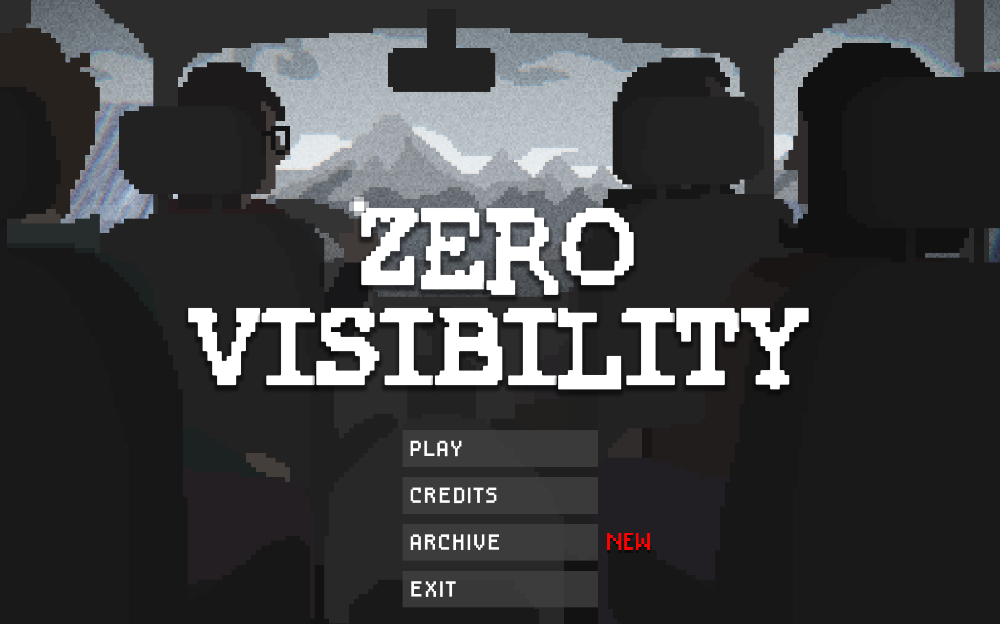
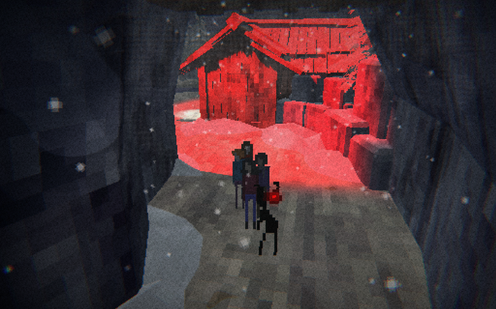
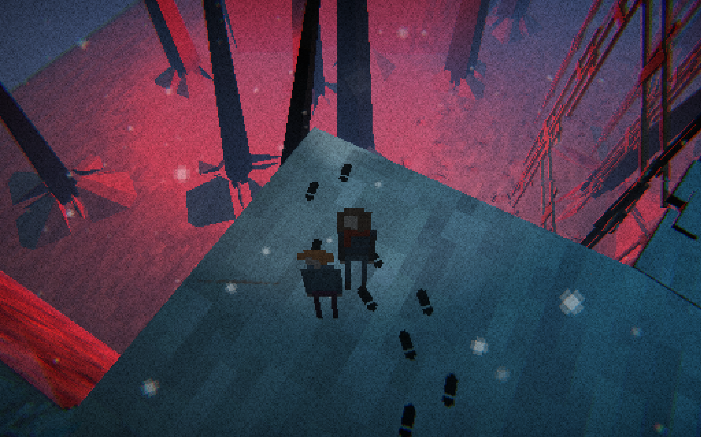
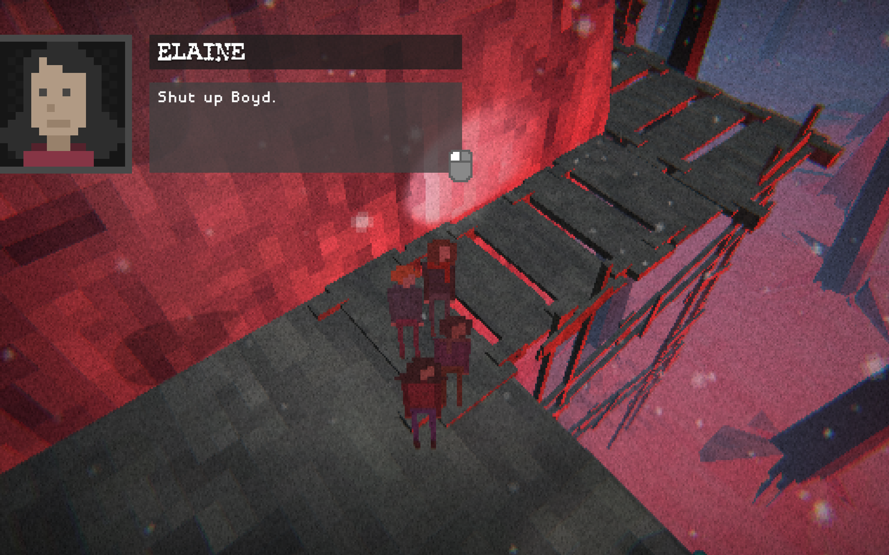
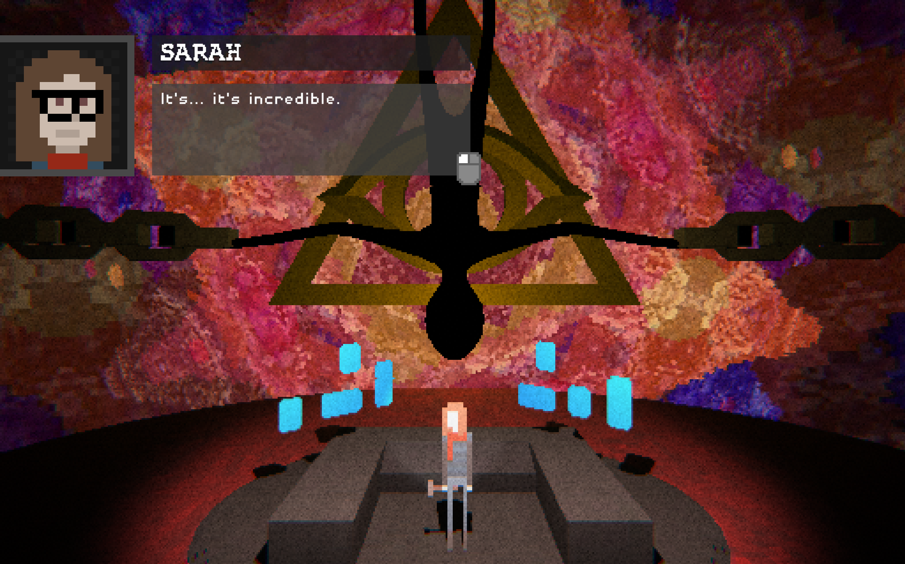
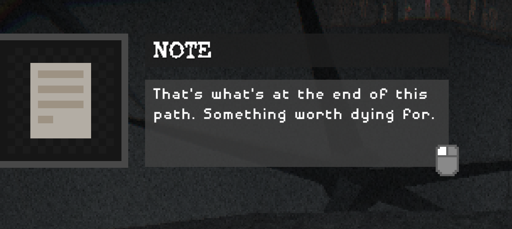
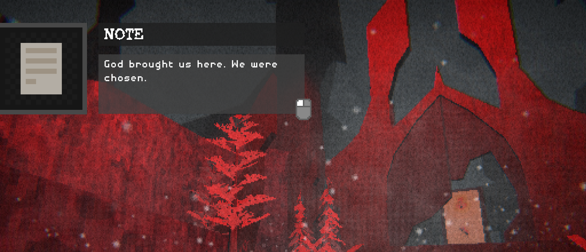
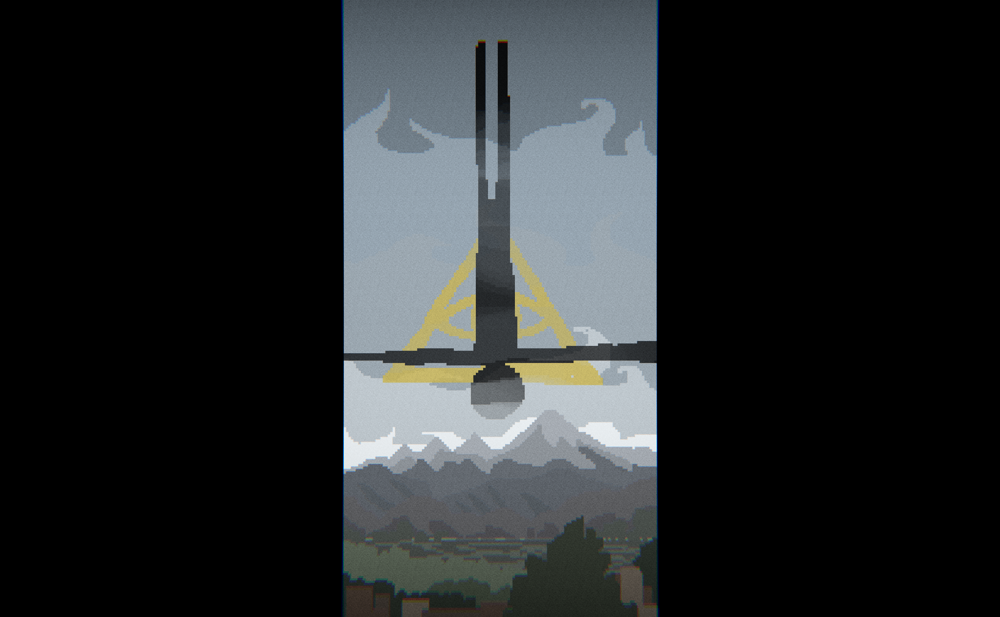

Make sure to drag the elements around to help paint a better picture.
Packed into 15-20 minutes of play time, 4 friends make their way up a mountain, get stranded, stalked and hunted by a creature, assaulted by visions of the unknown, trapped in an unknown landscape, and learn the meaning of incredible. With elements of time warpnig, religious iconagraphy, and the feel of a found footage film, I feel like this story was concocted specefically for me to fawn over.

The sounds of the mountain and the slow methodical music of the game makes you feel like you are actually on that mountain with them. There's very little visibility on the mountain and the world starts to get weirder as you progress further and further along the path adding to the exploration. The music and sound effects of the game are done masterfully and are at a cinema level. They really put you right into the world as you are playing. The howling wind, the footsteps in the snow, the coming of god?, it truly was Incredible. Then there's the visions that assault you early in the game that give hints at what's to come. It make you expectant and wanting to move forward adding to the illusion of exploring a world. Finally, there are the notes through the game that past people left that reveal more and more about what's happening. This makes it interesting to learn more and more about the game as you progress further and further.

The game starts with a drive up the mountain before your brick of a car breaks down and the party has to go on foot. Soon they are enclosed in the mountain trail when a wall materializes behind them. That is when reality starts to warp. Giant spikes jutting from the ground, giant pitfalls, freshly made wooden bridges, and more. That's when you come to the mountains peak and you come across a cathedral. In it is several murals that are almost like cave paintings explaining the history of what's happening to the characters. Though the back of the cathedral are floating islands connected by bridges and effigies line everything in the ethereal cave. When you get to the end there is one last cave opening that leads you to the altar. Inside can only be described as an acid trip with flashing colors that exist beyond the god like figure chained in the center of the room. Truly incredible, it was all worth it.

The main character is Sarah followed up with her friends, Boyd, Leo, and Elaine. The only other human you meet on the mountain is a scared guy living alone in a cabin he built that you meet right after the group is walled off. The other characters act as antagonists like the creature that stalks and hunts the group and god? at the end of the game. Sarah is the leader of the group with her at the front as you go along, Elaine is one that wanted to go on this trip and she sat at the back of the group and was seemingly the smartest, Leo wasn't that distinct to me acting mainly as the "normal" one of the group, and then there's the GOAT of the group, Boyd. He was by far my favorite character with the most personality. He was constantly making jokes but as the horror kept happening he started to shell away more and more and Sarah rose up with his fall. Unfortunately with the length of game we don't get to learn that much about the characters. We are mostly focused on the world as we learn more and more about what's happening. Boyd is the GOAT to me because I feel like he had the most character and he set up a lot of interactions with other characters.

The challenge of the game is that you are stranded on the mountain with the only way to go is forward. And then, you are being hunted by a monster that can vanish and appear anywhere. Your group is being picked off one by one until it is only Sarah left. The game is very linear and you make progress by just keep on keeping on, just move forward. The challenge isn't in difficulty, but in the horror of the game. Even then it isn't about a challenge, but about enjoying the story of the game.

The main object of the game that you interact with are the notes scattered around the world. Other things you interact with are the car at the start of the game and environmental aspects like the spikes that come out the ground and the walls that appear out of nowhere. The only physical o bject that Sarah uses specifically are a hammer and planks that you use to complete a bridge to get to the final altar of the game. You also use the hammer for one more thing but you'll have to play the game to know that. My favorite thing in the game is the notes because they are scattered optional things that you can look at but they reveal so much about the game, truly incredible. Why do I keep saying incredible? Great question. Play the game it's free.

The only thing that I want to see improve about the game is there to be more of it. 15 minutes is too short. I see many avenues where the game could easily be expanded to be about an hour or more. I would like to see the time well that the group is trapped in to be explored more. Like maybe they see something crazy like someone injured wearing clothes from like the early 1900's but they haven't died or aged in any way. I would also like the cathedral be explored more with a bigger actual building instead of immediately opening up into the weird cave structure. Overall, I am a sucker for world building and just want more and more of the game because of how good it is. Also maybe a puzzle, cause why not.

